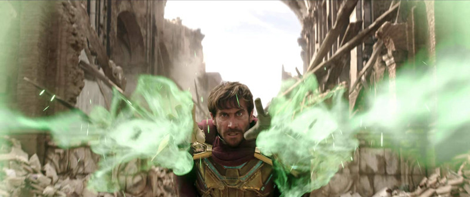

Euphoria của HBO gây tranh cãi vì quá nhiều cảnh tình dục ở thiếu niên
Ha Quoc Viet
Spider-man: Far From Home là bộ phim thuộc vũ trụ điện ảnh Marvel tiếp theo sau Avengers: Endgame, dự kiến sẽ tiếp tục công phá phòng vé toàn cầu và xác lập nhiều kỷ lục về doanh thu mới.
Theo kỳ vọng của nhà sản xuất, Spider-man: Far From Home sẽ đem về 154 triệu USD cho nhà Sony trong 6 ngày, trở thành bộ phim không thuộc Disney đầu tiên trong năm 2019 đạt doanh thu mở màn trên 100 triệu, vượt qua Captain Marvel để vươn lên vị trí số 2. Thậm chí, các nhà phân tích còn dự đoán doanh thu tuần đầu của Spider-man còn có thể lên đến 180 triệu, còn con số 150-160 triệu là hoàn toàn nằm trong tầm tay. Dự đoán này của nhà sản xuất và các chuyên gia hoàn toàn không phải không có căn cứ. Bởi vì, nó được dựa trên thành công trước đó của Spider-man: Homecoming với 117 triệu mở màn và thu về tổng cộng 880 triệu USD trên toàn cầu.
Trailer chính thức của Spider-man: Far From Home
Một lý do nữa để tin vào khởi đầu thuận lợi của Spider-man: Far From Home, đó là ngày ra mắt của phim. Ban đầu, Sony dự kiến sẽ ra mắt phim vào thứ 4, 5/7 tại Mỹ, nhưng nhà sản xuất đã quyết định đưa phim đến với khán giả sớm hơn 3 ngày, để tận dụng kỳ nghỉ lễ 6 ngày nhân dịp quốc khánh 4/7. Việc một bộ phim ra mắt vào ngày thứ 3 có lẽ là khá đặc biệt, nhưng cũng là bước đi khôn ngoan của nhà phát hành. Với tiềm năng to lớn của mình, phần phim người nhện tiếp theo cũng được kỳ vọng sẽ đem về thành công lớn tại thị trường Việt Nam khi ra mắt khán giả vào 5/7 tới.
Ngoài ra, người hâm mộ chắc chắn còn đang tò mò về những gì sẽ xảy ra tiếp theo với vũ trụ điện ảnh Marvel, khi Avengers: Endgame vừa kết thúc với cái chết của Thanos và sự ra đi của Tony Stark. Đặc biệt, trong trailer của Far From Home cũng cung cấp những đầu mối quan trọng về nơi MCU sẽ xảy ra các sự kiện tiếp theo, đồng thời gợi mở về những hậu quả khôn lường mà những gì 2 phần Avengers trước đã tạo ra. Nếu những chi tiết này cũng tạo được tiếng vang lớn như Endgame đã làm được, thì việc người xem truyền tai nhau sẽ là một phương thức marketing hiệu quả hơn cả, đem về doanh thu lớn hơn cho bộ phim.

Spider-man: Far From Home là sản phẩm hợp tác giữa Sony và Paramount Picture, nâng tổng số phim lớn được hãng này phát hành trong nửa đầu năm nay lên con số 3, cùng với Men In Black: International và Once Upon a Time...in Hollywood.
 Ha Quoc Viet
Ha Quoc Viet